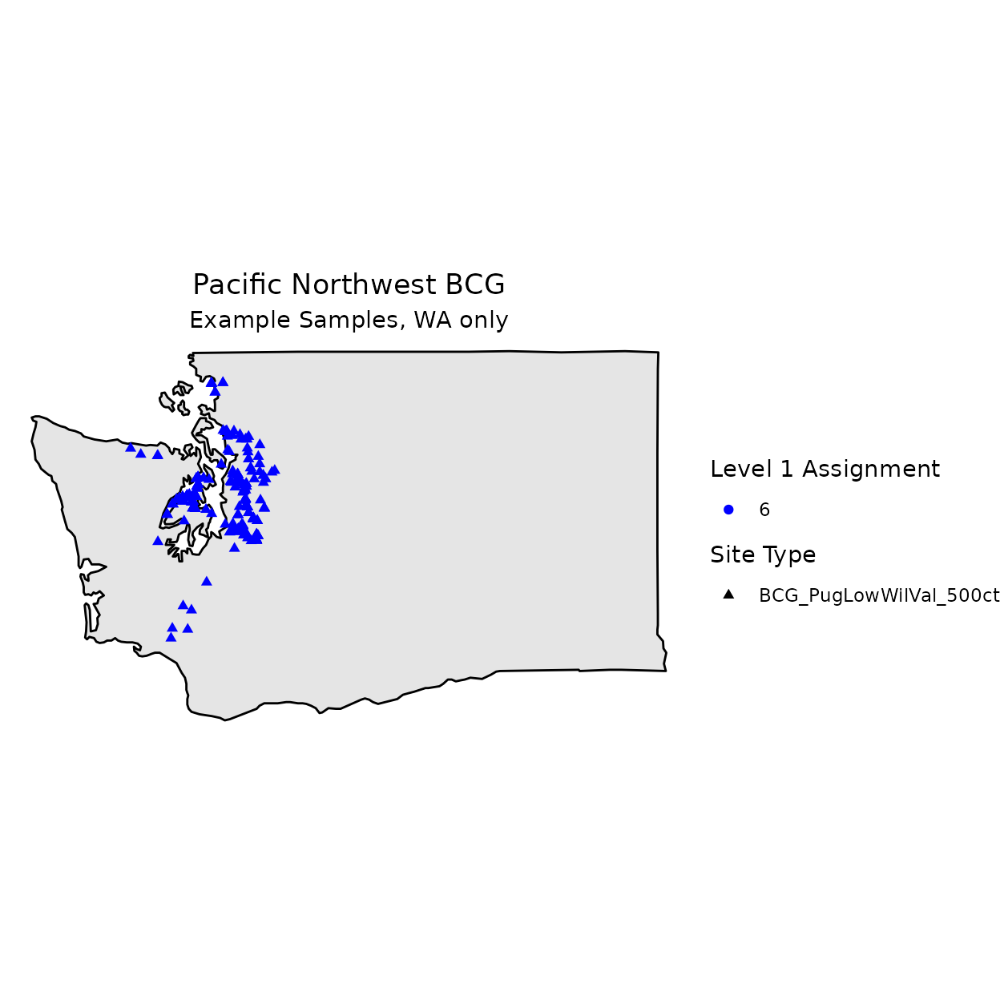

vignettes/BCGcalc_Map.Rmd
BCGcalc_Map.RmdUse ggplot to create a map from the example data
included in BCGcalc.
The example data only includes data from Washington.
# Packages
library(BCGcalc)
library(ggplot2)
library(readxl)
library(BioMonTools)
# Calculate BCG model
## Calculate Metrics
df_samps <- read_excel(
system.file("./extdata/Data_BCG_PugLowWilVal.xlsx",
package="BCGcalc"),
guess_max = 10^6)
## Run Function
myDF <- df_samps
col_add_char <- c("INFRAORDER",
"HABITAT",
"ELEVATION_ATTR",
"GRADIENT_ATTR",
"WSAREA_ATTR",
"HABSTRUCT")
col_add_num <- c("UFC",
"SAMP_AREA_M2"#,
# "DENSITY_M2"
)
myDF[, col_add_char] <- NA_character_
myDF[, col_add_num] <- NA_integer_
myCols <- c("Area_mi2",
"SurfaceArea",
# "Density_m2",
"Density_ft2")
df_metval <- metric.values(myDF,
"bugs",
fun.cols2keep = myCols)
#> Joining with `by = join_by(SAMPLEID, INDEX_NAME, INDEX_CLASS)`
## Import Rules
df_rules <- read_excel(
system.file("./extdata/Rules.xlsx",
package="BCGcalc"),
sheet="Rules")
## Calculate Metric Memberships
df_metmemb <- BCG.Metric.Membership(df_metval,
df_rules,
col_SITE_TYPE = "INDEX_REGION")
## Calculate Level Memberships
df_levmemb <- BCG.Level.Membership(df_metmemb,
df_rules)
## Run Function
df_levels <- BCG.Level.Assignment(df_levmemb)
# Add Lat-Long
## Get unique stations
df_stations <- as.data.frame(unique(df_samps[, c("SampleID",
"Latitude",
"Longitude"
)]))
## Merge
df_map <- merge(df_levels,
df_stations,
by.x = "SampleID",
by.y = "SampleID",
all.x = TRUE)
## Level1 Name to Character
df_map$Primary_BCG_Level <- as.character(df_map$Primary_BCG_Level)
# Palette, Color Blind
## http://www.cookbook-r.com/Graphs/Colors_(ggplot2)/
pal_cb <- c("#E69F00",
"#56B4E9",
"#009E73",
"#F0E442",
"#0072B2",
"#D55E00",
"#CC79A7",
"#999999")
pal_bcg_old <- c("green",
"cyan",
"blue",
"orange",
"red")
pal_bcg <- c("blue",
"green",
"gray",
"yellow",
"dark orange",
"red")
# Shapes
shp_solid <- c(17, 16) # solid triangle and circle
# Map
## Map of OR and WA
m1 <- ggplot(data = subset(map_data("state"),
region %in% c("washington"))) +
geom_polygon(aes(x = long, y = lat, group = group)
, fill = "gray90"
, color = "black") +
coord_fixed(1.3) +
theme_void() +
# Add Points
geom_point(data = df_map,
aes(Longitude,
Latitude,
shape = INDEX_NAME,
color = Primary_BCG_Level),
na.rm = TRUE) +
# Change shape
scale_shape_manual(name = "Site Type",
values = shp_solid) +
# Change colors
scale_colour_manual(name = "Level 1 Assignment",
values = pal_bcg) +
# Map Title
labs(title="Pacific Northwest BCG",
subtitle="Example Samples, WA only") +
theme(plot.title = element_text(hjust = 0.5),
plot.subtitle = element_text(hjust=0.5))
## Display Map
m1